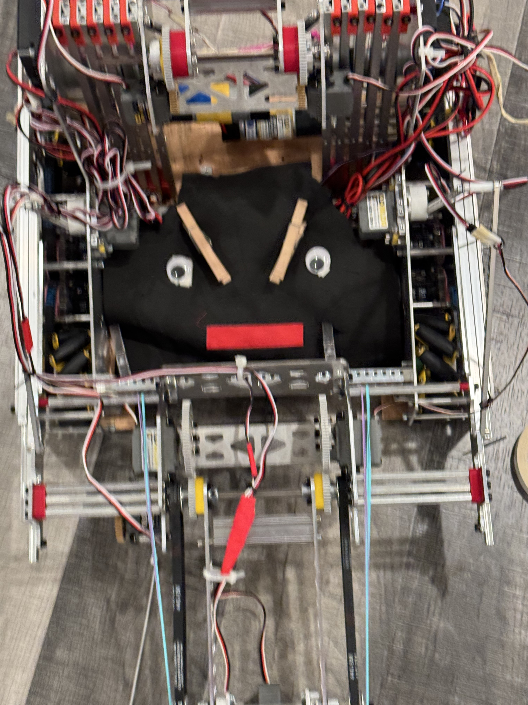

About
Why Controls
I like optimizing systems — control loops, code, competition robots — but the interesting problems are usually the messy ones, where the model doesn't quite match the hardware. That's what pulled me toward controls specifically, and why I'm minoring in math alongside my EE degree.
Most of that shows up through four years of FIRST Tech Challenge robotics: writing autonomous code and mentoring newer teammates through the same concepts I was still learning myself.
Add: candid photo of Ryan
Skills
Toolbox
Languages
Embedded & Controls
Development & Design
Lab & Fabrication
Experience
Robotics Leadership

Programming Lead & CAD/Design Lead
FIRST Tech Challenge Robotics — Ramifications #5155
- Led programming and CAD for a 10-member team, mentoring 3 students in Java, control systems, and Onshape
- Authored 3,000+ lines of Java, including a 25-class command framework and four autonomous routines
- Directed fabrication through CNC machining, 3D printing, and laser cutting; the team's control software won FIRST Control Awards two seasons running